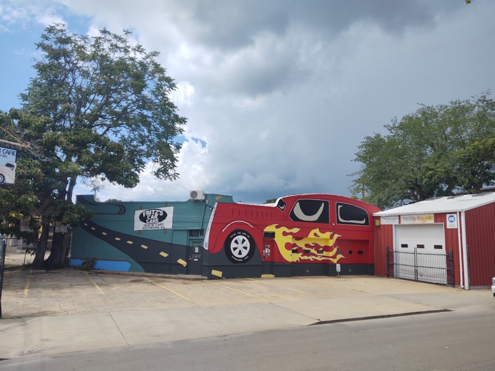
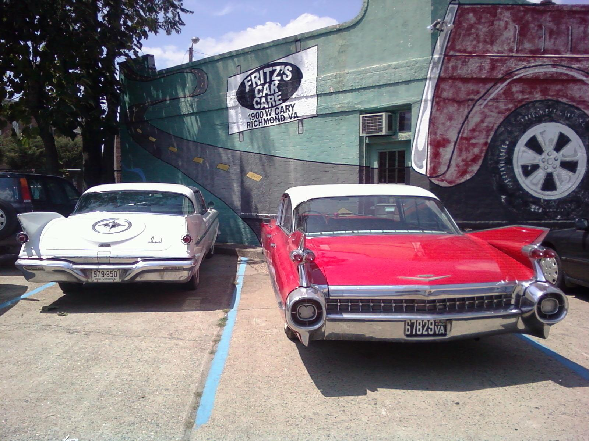
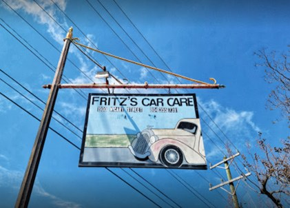
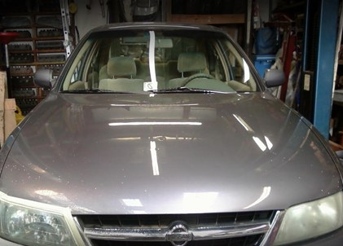

Design Preview: this is a concept website created by Freightfolio to show what a new website for this business could look like. It is not the business's live website.
Fritz's Car Care
Auto repair in the Fan · Richmond, Virginia · Since 1983

The shop at 1900 W Cary St, Richmond, with the red hot-rod mural painted across the building. Photo from the shop's Google listing.
Fritz's Car Care does diagnostics, repair, and routine service on all makes and models, foreign and domestic, with a specialty in preventive maintenance.
The shop sits at 1900 W Cary St, Richmond, VA 23220, in the Fan, and has served the Fan and Richmond area since 1983. The building is easy to spot: a red hot-rod with flames is painted across the teal wall, with the shop name and address on the sign.
Work at the shop covers diagnostics, repair, and routine service, state inspections, carburetor service, and tire repair, sales, and installation. A pre-purchase check-over is available before a car changes hands.

Diagnostics, including check-engine-light diagnosis, for foreign and domestic cars, to find the cause when something is wrong.
Preventive maintenance, the shop's specialty, from a shop serving the Fan and Richmond area since 1983.
Virginia state inspections, performed at the shop listed as a car inspection station.


Photos on this page are from the shop's public Google listing and the shop's own website gallery.
Fritz's Car Care is at 1900 W Cary St, Richmond, VA 23220. The shop is open Monday to Thursday 8:00am to 5:00pm, Friday 8:00am to 4:00pm, and closed Saturday and Sunday.